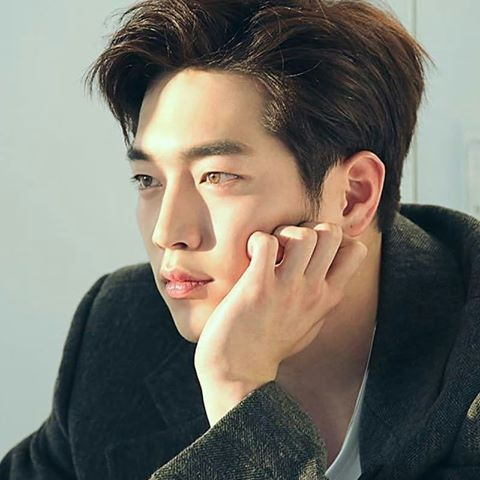

2013년 웹드라마 <방과 후 복불복>으로 데뷔했다. 중학교 2학년 때 말레이시아에서 1년 7개월 동안 유학하다가 고등학교 1학년 때 귀국해 졸업하고, 데뷔 후 연기예술학과에 입학했다.
고등학교를 졸업하고 오디션에 응시해 신사의 품격, 아름다운 그대에게 등의 드라마에서 단역 을 맡았다.# 학원 선생님의 권유로 판타지오의 오디션 기회를 얻게 되었고, 판타지오에서 주최한 신인 배우 오디션 '액터스 리그'에 합격한 후 연습생 시기를 거쳐 배우로 구성된 '배우 그룹' 5URPRISE에 소속되어 데뷔했다.# 실질적 연기 데뷔라 할 수 있는 드라마와 카툰이 합쳐진 생소한 장르인 웹드라마 방과 후 복불복에 출연. 같은 그룹 멤버들과 여배우 김소은과 호흡을 맞추었다.

수상한 가정부의 최수혁 역을 시작으로, 처음으로 서강준이라는 이름을 제대로 알렸던 하늘재 살인사건과 2014년 방송된 앙큼한 돌싱녀에서 연하남 국승현 역 이후 드라마 출연 빈도수가 높아지며 주가도 높아졌다. 단역부터 시작해 차근차근 밟아 나가는 중. 2014년 10월 28일 걸스데이 민아와 출연한 5부작 최고의 미래라는 웹드라마에도 출연했다. 삼성 유튜브 채널을 통해 방영됐었고, 네이버 TV에서도 불 수 있다.
2014년 8월 가족끼리 왜 이래에서 남지현을 사이에 두고 박형식과 좌충우돌 로맨스를 연기했다.
2015년 4월 화정에서 홍주원 역을 맡아 정통사극에 도전해 수염까지 붙이고 20대부터 40대 연기까지 연기했다.#
2016년 1월 치즈인더트랩의 백인호 역을 통해 까칠한 반항아 캐릭터로 얼굴과 이름을 더욱 알렸고, 연기적으로도 가장 칭찬을 많이 받은 작품이다. 공식으로 알려진 바에 의하면 하늘재 살인사건과 치즈인더트랩은 제작진 측에서 먼저 제의가 들어온 작품이다.
제작발표회에서 동갑인 배우들에 비해 노안이라는 이야기를 듣기도 하는데, 스스로 강점이라고 꼽았다. 이유는 많은 역할을 맡을 수 있는 넓은 스펙트럼을 가지고 있기 때문이라고 한다.
2016년 11월 사전제작 드라마 안투라지에서 차세대 톱스타 차영빈 역으로 출연했다. 드라마 자체 성적은 저조한 시청률로 성적은 좋지 않았으나, 톱스타 역할에 맞게 화려하지만 고뇌가 있고 상처가 있는 차영빈의 롤러코스터 같은 감정을 안정적으로 소화해냈다.#
출연한 영화로는 나의 사랑 나의 신부, 미안해 사랑해 고마워, 뷰티 인사이드가 있다.
2018년 6월 로맨틱 코미디물 너도 인간이니를 선택해 로봇 남신III를 연기했다. 첫 지상파 주연작이다 사전 제작으로 제작 되어 체코에서 해외 로케 등으로 바쁜 나날을 보냈지만 편성이 2018년으로 밀리면서 본의 아니게 공백기가 1년이 되어 버렸다.# 시청률 측면에선 아쉬운 부분도 있었지만, 1인 2역을 훌륭히 소화하며 본인의 연기력을 입증하였고 2018 KBS 연기대상에서 중편드라마부문 남자 우수연기상과 베스트커플상을 수상했다.
2018년 9월 JTBC 드라마 제3의 매력에서 온준영이라는 순수한 역할을 맡았다. 20세, 27세, 32세의 온준영이라는 인물이 첫사랑을 만나면서 겪는 내면의 변화를 담담하게 연기해 호평을 받았다. 서강준 본인도 지금까지의 역할 중 온준영에게 가장 애착이 간다고 여러 번 밝힌 바가 있을 정도로 따뜻하고 선한 역할이다.
2019년 7월 OCN 드라마 WATCHER에서 김영군 역으로 출연했다. 본인의 첫 장르물 드라마 출연작으로 처음 도전하는 장르물임에도 함께 주연을 맡은 베테랑 선배 배우들인 한석규, 김현주와 더불어 좋은 연기력을 보여주며 많은 호평을 받았다. OCN 드라마 중 2019년 시청률 1위, 역대 시청률 2위라는 성공적인 성적을 거두었다.
2020년 2월 JTBC 드라마 날씨가 좋으면 찾아가겠어요에서 북현리 굿나잇 책방을 운영하는 임은섭 역으로 출연한다. 아침에 일어나 커피를 내리고 책을 읽는다. 낮에는 책방 문을 잠시 닫아두고 스케이트장에 내려가 아이들과 놀아준다. 밤에는 잠이 안와 블로그에 [책방일지]를 쓰고 일주일에 한번 동네사람들과 독서회를 연다. 이것이 은섭의 오래된 일상이다. 해원이 북현리에 내려오면서 오랫동안 은섭의 마음에 있었던 해원이 그에게 조금씩 다가오고 있다.
임은섭 역할이 서강준 그자체라는 팬들의 반응이 많았다.